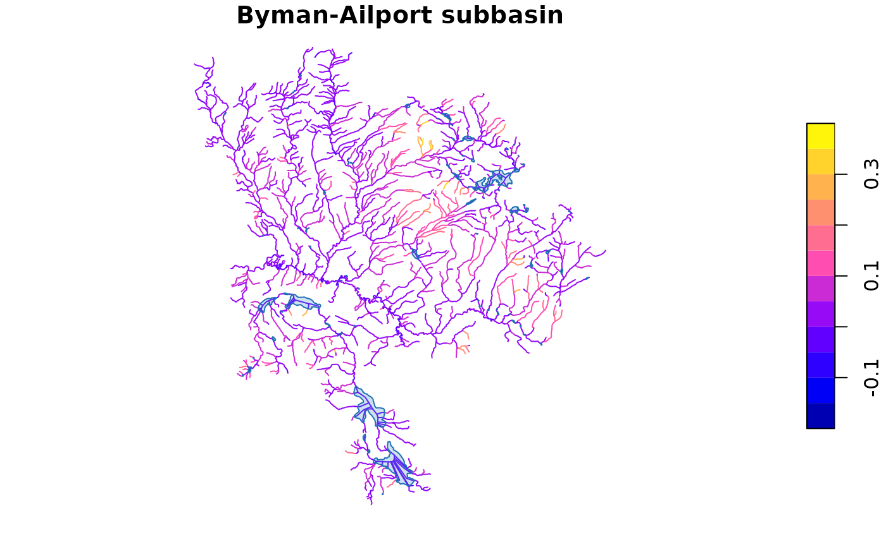

Query Multiple Tables Upstream or Downstream of a Network Position
Source:R/frs_network.R
frs_network.RdPoint at any position on the FWA stream network and retrieve features from
one or more tables — streams, crossings, barriers, fish observations, lakes,
wetlands, or any table with ltree watershed codes. Tables with
localcode_ltree are queried directly via fwa_upstream() /
fwa_downstream(). Tables without (like fwa_lakes_poly) are queried via
the waterbody_key bridge through the stream network.
Usage
frs_network(
conn,
blue_line_key,
downstream_route_measure,
upstream_measure = NULL,
upstream_blk = NULL,
tables = NULL,
direction = "upstream",
include_all = FALSE,
clip = NULL,
to = NULL,
overwrite = TRUE
)Arguments
- conn
A DBI::DBIConnection object (from
frs_db_conn()).- blue_line_key
Integer. Blue line key of the reference point.
- downstream_route_measure
Numeric. Downstream route measure of the downstream boundary.
- upstream_measure
Numeric or
NULL. Downstream route measure of the upstream boundary. When provided, returns features between the two measures (network subtraction). Only valid withdirection = "upstream".- upstream_blk
Integer or
NULL. Blue line key for the upstream point. Defaults toblue_line_key(same stream). Use when the upstream point is on a tributary.- tables
A named list of table specifications. Each element can be:
A character string (table name) — uses default columns
A list with any of:
table,cols,wscode_col,localcode_col,extra_where(Warning:extra_whereis raw SQL — never populate from untrusted user input.)
If
NULL(default), queries FWA streams only.- direction
Character.
"upstream"(default) or"downstream".- include_all
Logical. If
TRUE, include placeholder streams (999 wscode) and unmapped tributaries (NULL localcode). DefaultFALSEfilters these out. Only applied when querying the FWA base table.- clip
An
sforsfcpolygon to clip results to (e.g. fromfrs_watershed_at_measure()). DefaultNULL(no clipping). Useful for waterbody polygons that straddle watershed boundaries. Seefrs_clip(). Cannot be used withto(clipping is an R-side spatial operation).- to
Character or
NULL. When provided, write results to working table(s) on the database instead of returning sf objects. For a single table,tois the exact table name. For multiple tables,tois a prefix and each table name is appended as a suffix (e.g.to = "working.byman"withstreamsandlakescreatesworking.byman_streamsandworking.byman_lakes). Returnsconninvisibly for pipe chaining. See Examples.- overwrite
Logical. When
tois provided, drop existing tables before writing. DefaultTRUE.
Value
When to is NULL: a named list of sf data frames (or plain
data frames for tables without geometry). If only one table is queried,
returns the data frame directly. When to is provided: conn invisibly,
for pipe chaining with frs_col_join(), frs_col_generate(), etc.
Details
When upstream_measure is provided, returns only features between the two
points — network subtraction (upstream of A minus upstream of B) with no
spatial clipping needed. The upstream point can be on a different blue line
key (e.g. a tributary) by specifying upstream_blk.
See also
Other traverse:
frs_network_downstream(),
frs_network_upstream(),
frs_waterbody_network()
Examples
# --- What frs_network returns (bundled data) ---
d <- readRDS(system.file("extdata", "byman_ailport.rds", package = "fresh"))
names(d) # aoi, streams, co, lakes, roads, highways, fsr, railway
#> [1] "aoi" "streams" "co" "lakes" "roads" "highways" "fsr"
#> [8] "railway"
message("Streams: ", nrow(d$streams), " | Lakes: ", nrow(d$lakes))
#> Streams: 2167 | Lakes: 89
# Plot the subbasin — streams colored by gradient, lakes in blue
plot(d$streams["gradient"], main = "Byman-Ailport subbasin", reset = FALSE)
plot(sf::st_geometry(d$lakes), col = "#4292C644", border = "#2171B5",
add = TRUE)

if (FALSE) { # \dontrun{
# --- Live DB: multi-table network query ---
conn <- frs_db_conn()
blk <- 360873822
# Plot 1: ALL upstream waterbodies
result <- frs_network(conn, blk, 208877, upstream_measure = 233564,
tables = list(
streams = "whse_basemapping.fwa_stream_networks_sp",
lakes = "whse_basemapping.fwa_lakes_poly",
wetlands = "whse_basemapping.fwa_wetlands_poly"
))
plot(sf::st_geometry(result$streams), col = "steelblue",
main = paste("All:", nrow(result$lakes), "lakes,",
nrow(result$wetlands), "wetlands"))
plot(sf::st_geometry(result$lakes), col = "#4292C644",
border = "#2171B5", add = TRUE)
plot(sf::st_geometry(result$wetlands), col = "#41AB5D44",
border = "#238B45", add = TRUE)
# Plot 2: only waterbodies on coho habitat streams
# from = bcfishpass table, extra_where filters by habitat columns
# Traversal stays on indexed FWA base table (fast), filter is a cheap join
filtered <- frs_network(conn,
blue_line_key = blk,
downstream_route_measure = 208877,
upstream_measure = 233564,
tables = list(
co = list(
table = "bcfishpass.streams_co_vw",
wscode_col = "wscode",
localcode_col = "localcode"),
lakes = list(
table = "whse_basemapping.fwa_lakes_poly",
from = "bcfishpass.streams_co_vw",
extra_where = "spawning > 0 OR rearing > 0"),
wetlands = list(
table = "whse_basemapping.fwa_wetlands_poly",
from = "bcfishpass.streams_co_vw",
extra_where = "spawning > 0 OR rearing > 0")
))
plot(sf::st_geometry(result$streams), col = "steelblue",
main = paste("CO habitat:", nrow(filtered$lakes), "lakes,",
nrow(filtered$wetlands), "wetlands"))
plot(sf::st_geometry(filtered$lakes), col = "#4292C644",
border = "#2171B5", add = TRUE)
plot(sf::st_geometry(filtered$wetlands), col = "#41AB5D44",
border = "#238B45", add = TRUE)
legend("topright", legend = c("Lakes", "Wetlands"),
fill = c("#4292C644", "#41AB5D44"),
border = c("#2171B5", "#238B45"))
# --- DB pipeline: write to table, enrich, classify ---
# Stays on PostgreSQL — no R memory bottleneck at scale
conn |>
frs_network(blk, 208877, upstream_measure = 233564,
to = "working.demo_pipeline") |>
frs_col_join("working.demo_pipeline",
from = "fwa_stream_networks_channel_width",
cols = c("channel_width", "channel_width_source"),
by = "linear_feature_id") |>
frs_col_generate("working.demo_pipeline")
# Read the result when you need it in R
enriched <- frs_db_query(conn, "SELECT * FROM working.demo_pipeline")
DBI::dbExecute(conn, "DROP TABLE IF EXISTS working.demo_pipeline")
DBI::dbDisconnect(conn)
} # }